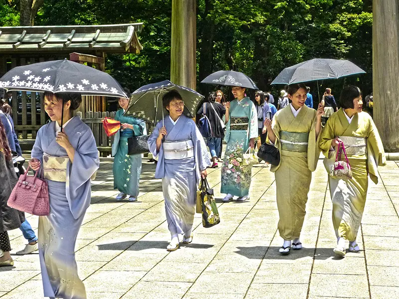

PARA OS AMANTES DA CULTURA ASIÁTICA
Conheça 3 destinos imperdíveis em Tokyo
Tóquio é um destino que mistura tradição e inovação como nenhum outro lugar no mundo. De templos históricos e jardins tranquilos a bairros modernos repletos de luzes, tecnologia e cultura pop, a capital japonesa oferece experiências para todos os gostos. É o lugar ideal para quem quer explorar a cultura japonesa, provar uma das culinárias mais respeitadas do mundo e vivenciar o ritmo vibrante de uma das maiores metrópoles do planeta. Cada bairro é um universo à parte — e Tóquio garante surpresas em cada esquina.
-

- Harajuku
- História
- Família
- Diversão
- Meji Shrine
- História
- Tokyo Museum of Photography
- História
Um bairro famoso pela moda criativa, lojas diferentes e cultura jovem. Ideal para quem gosta de estilos únicos, doces coloridos, e quer ver o lado mais divertido e moderno de Tóquio.
Bom para:
Um dos templos mais famosos de Tóquio, cercado por uma floresta no meio da cidade. É perfeito para quem busca paz, natureza e um contato com a tradição espiritual do Japão.
Bom para:
Um museu dedicado à arte da fotografia, com exposições que vão de artistas japoneses a fotógrafos internacionais. É um lugar tranquilo para quem gosta de imagens que contam histórias e mostram o mundo de formas únicas.
Bom para:
As melhores coisas para fazer em Tokyo mostram a reputação da cidade como um centro turístico de paisagens deslumbrantes que misturam a alta tecnologia presente no mercado com intensas paisagens naturais e festivais culturais que datam de gerações e carregam consigo a história de milhares de anos e pessoas.